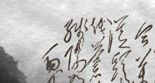
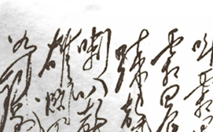
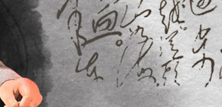
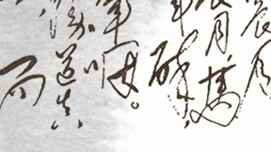
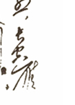
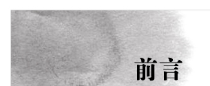
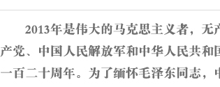
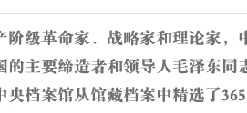
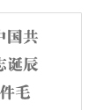
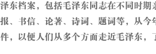
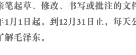
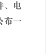
1934年夏：毛泽东手书自作词：《清平乐·会昌》
1941年6月13日：毛泽东致林伯渠信
1950年6月12日：毛泽东致陈铭枢信
1949年6月11日：毛泽东关于同意泾渭间作战方针给彭德怀的复电
1952年6月10日：毛泽东为中华全国体育总会成立大会的题词
1949年6月9日：毛泽东致任弼时信
1957年6月8日：毛泽东致孙燕信
1920年6月7日：毛泽东致黎锦熙信
1947年6月6日：毛泽东起草的中共中央军委关于做好夺取大西北的一切准备给陈赓等的电报
1946年6月5日：毛泽东起草的中共中央关于保持松花江以北及鞍山、营口等地在我手中给林彪等的电报
1950年6月4日：毛泽东关于修改《土地改革问题的报告》给刘少奇的信
1946年6月3日：毛泽东起草的中共中央关于建立东北根据地的方针给东北局等的指示
1949年6月2日：毛泽东起草的中共中央军委关于二野入川行动时间等问题给华东局等的指示
1950年6月1日：毛泽东为儿童节的题词
1954年5月：毛泽东为官厅水库完工题词
毛泽东书写的古诗词：李白《送孟浩然之广陵》
毛泽东书写的古诗词：王之涣《登鹳雀楼》
1947年5月28日：毛泽东起草的中共中央致郑位三、李先念并转中原军区全体同志的慰问电
1950年5月27日：毛泽东致刘亚南信
1949年5月26日：毛泽东起草的中共中央关于通报平津接收企业经验的电报
首页
上一页
[6]
[7]
[8]
[9]
[10]
[11]
[12]
[13]
[14]
[15]
下一页
尾页